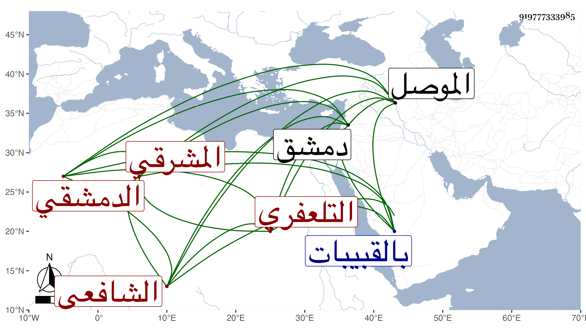

0902Sakhawi.DawLamic.ITO20230111-ara1.EIS1600.919777333985
Biography ID: 919777333985
430
حسن بن علي بن حسن بن علي بن قاسم البدر أبو محمد بن القاضي علاء الدين المشرقي الأصل ثم التلعفري الدمشقي الشافعي والد محمد وعبد الرحيم الآتيين ويعرف بالمحوجب . كان أبوه قاضي تلعفر من نواحي الموصل قال ابن الأثير تبعا لأصله وظني أنها التل الأعفر فخففوها وقالوا تلعفر . فولد صاحب الترجمة بها ثم قدم قبل استكماله عشر سنين مع أبيه دمشق وكان ذلك ظنا في أيام التاج السبكي فاشتغل على أهل تلك الطبقة في الفقه والقرءات والعربية والفرائض ومن شيوخه فيهما العلاء التلعفري أحد تلامذة ابن تيمية وليس بأبيه بل هو آخر شاركه في النسبة واللقب ، صارت له يد في القرءات والفرائض وبراعة في الشروط مع الضبط لدينه ودنياه والوجاهة في العدالة ، ثم لزم بأخرة مسجد الخوارزمي من القبيبات إلى أن مات سنة أربع عشرة عن نحو التسعين بتقديم التاء ، ودفن بالقبيبات جوار التقي الحصني رحمهما الله وإيانا .
